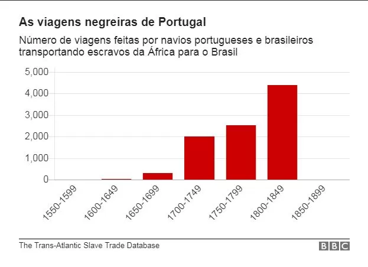

Resumo
A história da população negra no Brasil começa no século XVI com a colonização do Brasil por Portugal, inicialmente os indígenas eram escravizados, mas por diversos motivos houve uma transição do povo indígena para a população Africana, o principal deles sendo a alta taxa de lucro do tráfico negreiro, que causou a maior migração forçada de toda a história da humanidade, a diáspora negra, tendo mais de 10 milhões de Africanos levados para as Américas, sendo que cerca de 5 milhões foram levados somente ao Brasil em cerca de 9 mil viagens.
Ao longo da história do Brasil como Sociedade Escravista, sociedade em que a importância de um indivíduo depende de seu número de escravos, a mão de obra escrava atuava na produção de açúcar(nos engenhos de açúcar), tabaco, algodão e café, havia muita resistência dos escravos, como fugas e a formação de Quilombos(comunidades formadas pelos escravos que conseguiram fugir), e uma resistência cultural, como continuar rezando para seus próprios Deuses, e para impedir que os escravos se rebelem eram feitos castigos corporais e eram favorecidos os que se comportavam com trabalhos mais leves.
No século XIX, em 1831, após muita insistência da Inglaterra foi aprovada uma lei que proibiria o tráfico de escravos, porém efetivamente essa lei não mudou quase nada, foi feita apenas para a Inglaterra achar que estava havendo algum avanço no Brasil, como resposta a Inglaterra criou a Lei Bill Aberdeen, que concedia a esquadra Britânica o direito de prender e punir qualquer navio negreiro no oceano Atlântico, até que enfim, em 1850 foi aprovada a lei Eusébio de Queiroz que efetivamente proibiu o tráfico de escravos.
O Brasil foi o ultimo país a abolir a escravidão, pode se afirmar a escravidão no país foi abolida gradativamente, inicialmente, o Brasil negligenciou esse assunto pela guerra do Paraguai(1864 - 1870), e um ano após a guerra, em 1871, foi aprovada a lei ventre livre, que dizia que os filhos de escravos nascidos a partir daquele período estariam livres, nota-se que essa lei não resolveu nada, quem é escravo continua escravo, em 1885, foi aprovada uma lei que proibia o uso de castigos corporais, e enfim, em 1888 foi aprovada e lei Áurea que realmente colocou um fim a escravidão no Brasil.
Porém, não foram tomados as medidas necessárias para inserir a população negra na sociedade de forma adequada, eles foram deixados de lado, não foram lhes dados terras(moradia), oportunidade de aprendizado(escola) e dificilmente conseguiam trabalhos decentes, as consequências foram uma sociedade ainda racista e uma população negra desfavorecida.